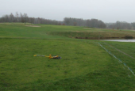
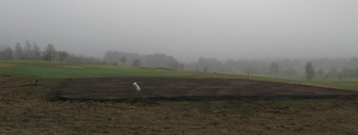

<div class="pages">
  <div data-page="573-6-tee-51-55-venter-pa-forar-sol-og-sommer" class="page navbar-fixed toolbar-fixed" >
    <div class="navbar">
      <div class="navbar-inner">
        <div class="left">
          <a href="#" class="link back icon-only"><i class="icon icon-back"></i></a>
          <!-- <a href="#" class="back link icon-only"><i class="icon icon-back"></i></a> -->
        </div>
        <div class="center">Information fra bestyrelsen og økonomital opdateret</div>
        <!-- <div class="right"></div> -->
        <div class="right">
        </div>
      </div>
    </div>
    <div class="page-content" style="padding-top:45px;">
       <div class="content-block">
          <p><b>6. tee 51/55 venter på forår, sol og sommer</b></p>
          <p>Greenkeeperne er nu færdige med 6. tee 51/55 som er udvidet betragteligt.
          <br /><br />
          På det første billede kan du teestedet som det så ud og mens der blev målt op.
          <br /><br /> 
          På det næste billede kan du se hvor meget det bliver udvidet. Det er den lyse stribe rundt om teestedet.
          <br /><br /> 
          Det sidste billede viser teestedet efter det er færdig anlagt.
          <br /><br /> 
          Indtil det er klar til at blive taget i brug, så vil der være et teested fra måtte eller græs. Søren lover at åbne det, så snart græsset kan tåle det, men det bliver et stykke hen på sommeren 2017.
          </p>
          <center></center>
          <center></center>
          <center></center>
        </div>
    </div>
    </div>
    </div>
  </div>
</div>
